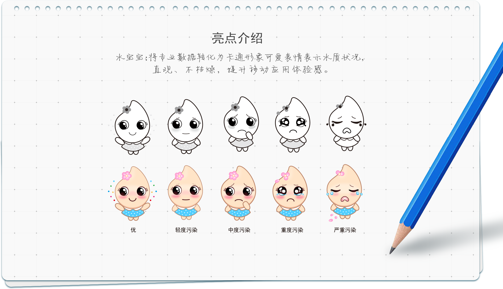
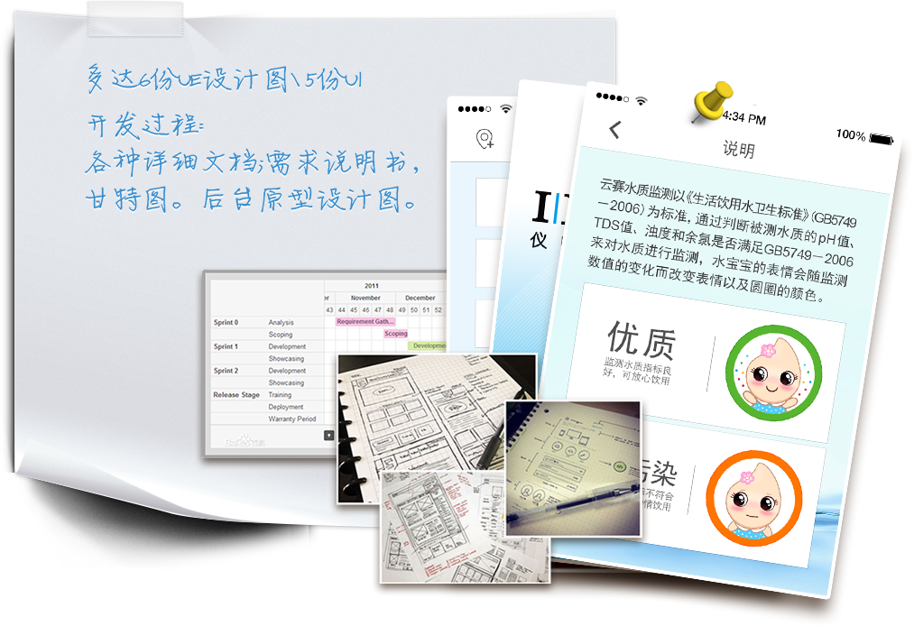

上海仪电控股介绍
上海仪电控股（集团）公司是经上海市人民政府批准，接受上海市国有资产监督管理委员会授权的国有资产经营公司，是具有独立法人资格的国有独资的控股集团公司。从上世纪60年代到80年代，在市仪表局统一筹划下，建立起一大批大中型的仪表电子企业，建成了漕河泾仪表电子工业园，全系统共研制出133项国内首创的新产品和新技术，填补了国内空白，为中国仪电工业发展做出重要贡献。
居民水质状况检测系统
Question 客户问题
企业与居民之间无互动，水质监测结果数据无法直达居民。
- 没有沟通渠道：
- 居民没有了解水质的渠道；
- 无了解方式：
- 专业数据不便理解，无法得到准确反馈；
- 无法展示数据：
- 数据无法对比，企业工作得不到认可。
Solution 解决方案
全面提升终端用户（居民）体验感及对企业工作满意度。
- 建立移动渠道：
- 随时随地打开手机察看水质；
- 人性化方式：
- 以动画形式直观表达数据；
- 云端数据库：
- 数据上传云端，可查阅今日之前数据，直观反映水质对比。

用我们的专业服务打动客户
多次主动拜访，与高层领导约谈、技术人员约谈，深度参与水质监测过程，分析大量站点水质监测数据， 了解水质主要参数对人体的影响。帮助客户深入的认识手机应用的人性化功能，规划了客户需求，将专业的水质曲线展示转化为可视效果。
从项目伊始，项目负责人全程跟进五项管理公司日常业务，深入客户公司与团队一起参加晨夕会；与客户公司销售总监、IT总监、财务总监深入沟通十数次，约谈数十名员工，详细了解原来使手工填表过程以及不方便处，深挖客户需求，想客户所想，行动在客户需求之前，为UE设计提供了第一手详细准确资料。
增加说明栏目，将数据与表情对应，便于理解；
优化水质监测站点名称，将无参与感的专业监测取样名称修改为地名；
独创的优质体验感移动应用设计使该软件多次被媒体报道，
同时在客户公司内部获得项目创意大奖，得到客户良好反馈。
